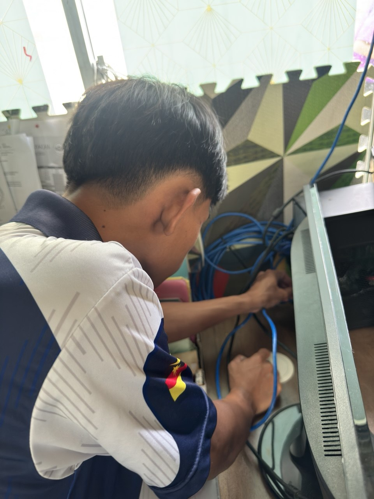
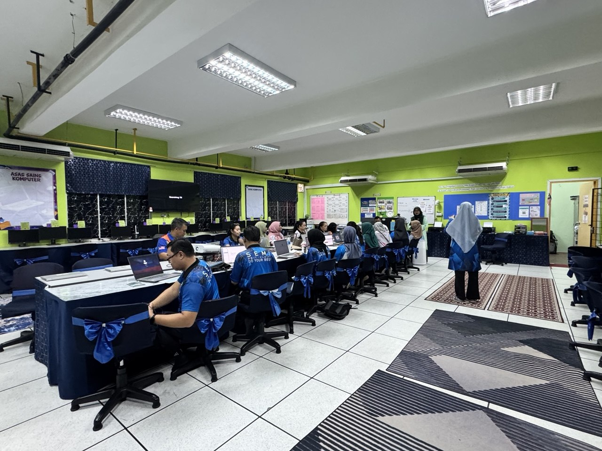
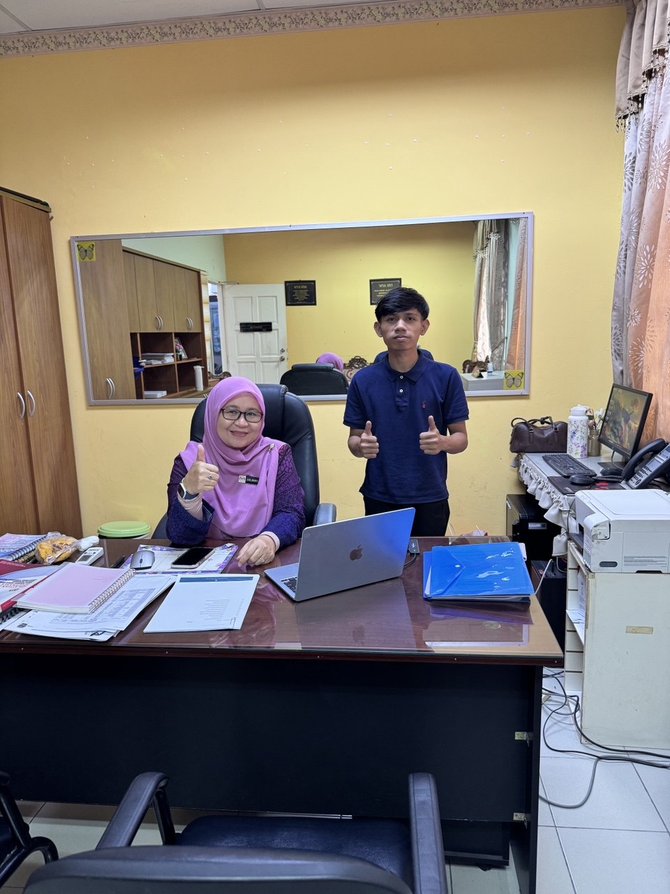
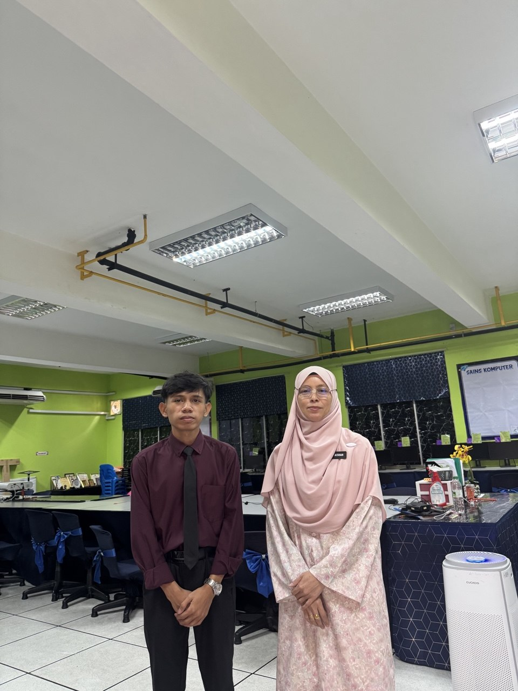

My Experience
- Website Developer — SMK Inanam
I developed the school’s website to make school information easier to find online. - ICT Intern — SMK Inanam
I gained hands-on experience with IT support, troubleshooting and networking in a school environment.
These experiences helped me apply what I’ve learned in real-world situations and develop a deeper understanding of how technology supports people in their everyday work. They showed me how digital tools can improve efficiency, simplify complex tasks, strengthen communication, and help individuals and organizations solve problems more effectively. Through these opportunities, I also gained greater confidence in adapting to new technologies, working collaboratively, and recognizing the practical impact that technology can have across different environments.
Internship Photos




